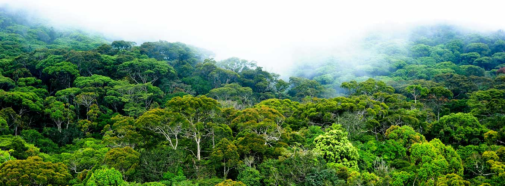

Yala(National park)

Sinharaja Rain Forest(Nature Reserve)

We share our planet with an estimated 10 million species, each playing a unique role in the web of life. Loss of even a single species can unravel this delicate balance, potentially impacting food webs, water regulation, and even climate. So it is our mission to conserve the biodiversity of Sri Lanka by protecting its wildlife and habitats.
The Department of Wildlife Conservation Conserves the Biodiversity of Sri Lanka. Every individual species is provided legal protection through the Fauna and Flora Protection Ordinance No 2 of 1937. Habitats and the associated biodiversity are protected through a network of Protected Areas. International Trade of Wild Species are Regulated both using the provisions Fauna and Flora Protection Ordinance a the Provisions of the Convention on International Trade in Endangered Species of Wild Fauna and Flora (CITES).